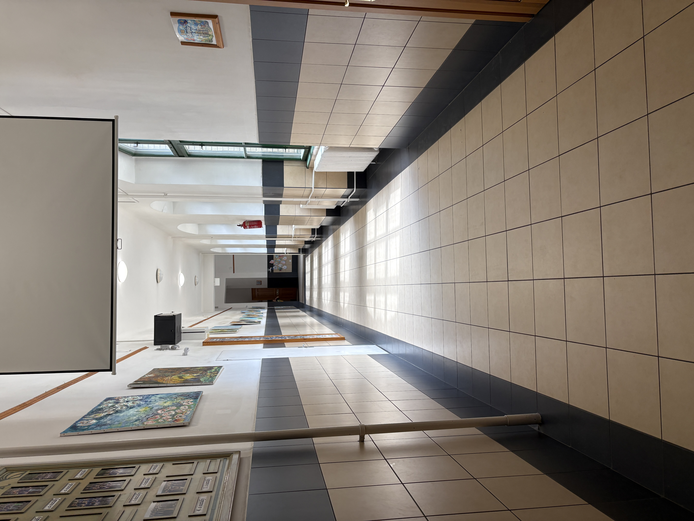
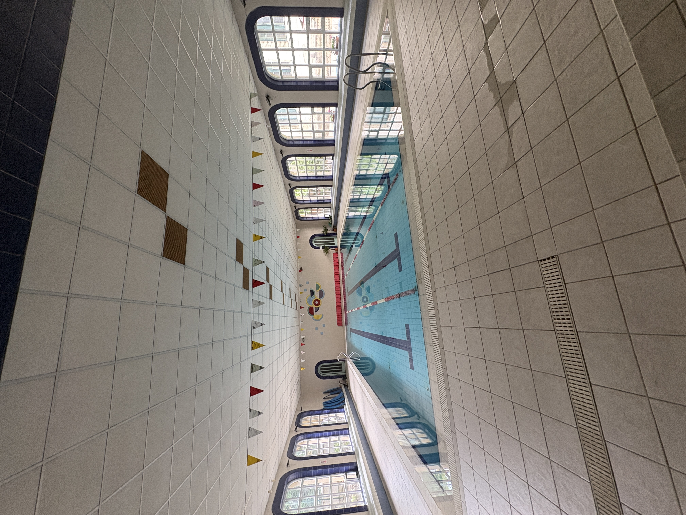
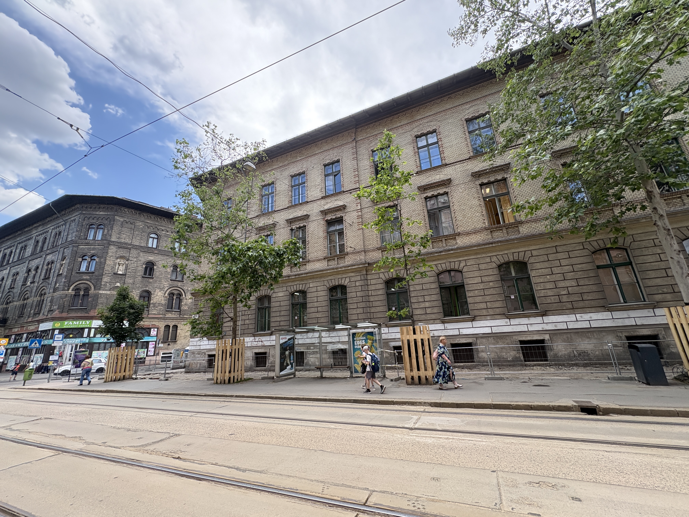

Képgaléria



1095 Budapest, Mester utca 19.

A Budapest IX. Kerületi Molnár Ferenc Magyar-Angol Két Tanítási Nyelvű Általános Iskola Ferencváros egyik meghatározó oktatási intézménye. Az iskola magas színvonalú oktatást, angol nyelvi képzést és számos közösségi programot kínál tanulói számára.
Célunk, hogy tanulóink biztonságos, támogató környezetben fejlődjenek, miközben korszerű tudást és nyelvi készségeket szereznek.
Magas színvonalú oktatás és magyar-angol két tanítási nyelvű képzés.
Sportfoglalkozások, versenyek és aktív iskolai élet.
Kirándulások, ünnepségek és iskolai rendezvények.
Tanulóink már fiatal korban magas szinten sajátíthatják el az angol nyelvet.
Tapasztalt és elhivatott tanáraink segítik a diákok fejlődését.
Kirándulások, versenyek és közösségi programok várják a tanulókat.
A rendszeres testmozgás és sport fontos része az iskolai életnek.
Iskolánk befogadó és támogató környezetet biztosít minden diák számára.
Korszerű módszerekkel és digitális eszközökkel támogatjuk a tanulást.


📍 Cím: 1095 Budapest, Mester utca 19.
Térkép megnyitása